Spatial Interpolation: Methods
Helena Mitasova
Outline (learning objectives)
- spatial interpolation: definition, applications
- methods and their properties
- voronoi and TIN
- IDW
- geostatistics
- radial basis functions and splines
When to use bi-variate interpolation
Bi-variate: Find surface representation based on values measured at 2D points
- convert scattered points, profiles, isolines to raster: gridding
- resample raster data to higher resolution
- compute denser or smoother mesh representation
Scattered points to raster
From given scattered points to points at regular grid

When to use bi-variate interpolation
From given scattered points to points at regular grid
 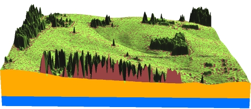
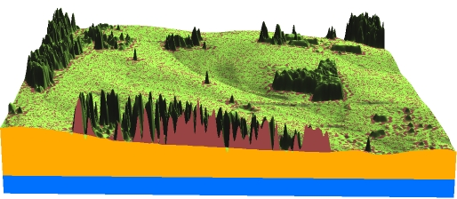
When to use tri-variate interpolation
Tri-variate: Find volume representation based on values measured at 3D points
- resample 3D raster data to higher resolution
- convert scattered 3D points, profiles, to 3D grid
- compute denser or smoother mesh representation
When to use tri-variate interpolation
Tri-variate: Find volume representation based on values measured at 3D points
 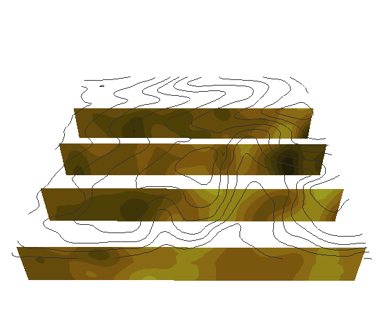
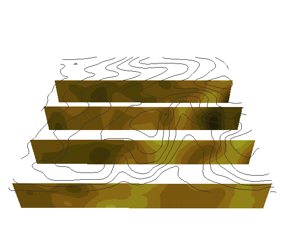
Soil properties: clay content
Quad-variate interpolation
Find continuous space-time representation based on values measured at 3D points over time
- resample series of 3D raster data to higher spatio-temporal resolution
- convert scattered 4D points to 4D grid (3D grid series)
Sampling points of groundwater pollution in space and time
Quad-variate interpolation
Groundwater pollution over 10 years - 3D space + time

Spatial interpolation: foundations
Problem definition
- find a function which passes through (or close to) the given set of discrete points and then
- use this function to estimate the values at unsampled points – usually a regular grid
Mathematical formulation
Bi-variate interpolation and approximation can be formulated as follows:
Given $m$-points $(x_i, y_i, z_i), i=1,m$ find such $F(x,y)$ that for each $i=1,m$
$$z_i=F(x_i,y_i)$$ or
$$z_i=F(x_i,y_i) + e(x_i,y_i)$$
and compute $z_k=F(x_k,y_k)$ where $(x_k,y_k)$ are grid points
Why is this a difficult problem?
Interpolation problem solution
Problem does not have a unique solution:

Interpolation problem solution
Problem does not have a unique solution:

Interpolation problem solution
Problem does not have a unique solution:
Interpolation problem solution
Problem does not have a unique solution:
additional conditions are needed
Interpolation conditions
- Locality : each point influences the surface only up to certain distance
or value at a given point will be similar to values at nearby points
- Geostatistical: surface is one realization of a random function with spatial covariance
- Smoothness surface should be as smooth as possible while passing through or close to the data points
Interpolation general equation
Spatial interpolation function $F(r)$ can be expressed as:
$$
F(r) = T(r) + ∑ λ_j R(r,r_j) \; j=1,m
$$
- $r = (x,y)$ is location of a grid point,
- $r_j=(x_j,y_j$) is location of a measured point
- $T$ is trend (low order polynomial),
- $λ_j$ are coefficients
- $R(r,r_j)$ is a function of distance between unsampled and measured point (radial basis function, model variogram)
Local interpolation methods
Only a small subset of $n$ neighboring points is used
- Voronoi polygons
- Triangular Irregular Network (TIN) - based
- Inverse distance weighted method
Voronoi (Thiessen) polygons
Voronoi polygon edges are equidistant to 2 given points
and define a unique nearest neighborhood around each point.

Voronoi diagram generator
Voronoi (Thiessen) polygons
Voronoi polygons are derived from the measured data - a measured point is at the center of a Voronoi polygon
Value at an unsampled point $z(x,y)$ is the same as the measured value $z(x_j,y_j)$
at the center of the Voronoi polygon $V_j$ within which the unsampled point is located:
$$ T(x,y) = 0 $$
$$z(x,y) = λ z(x_j,y_j)$$
- $\lambda = 1$, if $(x,y)$ is within $V_j$
- $\lambda = 0$, if $(x,y)$ is outside $V_j$
- and $j = 1,m$, where $m$ is the number of points
Voronoi polygons
2m resolution DEM computed using Voronoi polygons:
includes only measured values and the surface is not continuous

Linear TIN-based method

Inverse distance weight method

Kriging

Splines


Summary
Can you guess the interpolation method?

Histogram equalized color
Distribution of color based on histogram of raster data values and a custom color ramp

add equation or graph?
Color for non-linear distributions
- Flow accumulation data range over several magnitudes
- Uniform interval color ramp
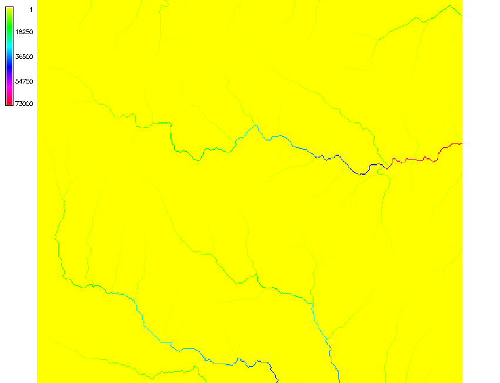
The flow accumulation values range between 1 and 73000
Color for non-linear distributions
- Flow accumulation data range over several magnitudes
- Histogram equalized color ramp
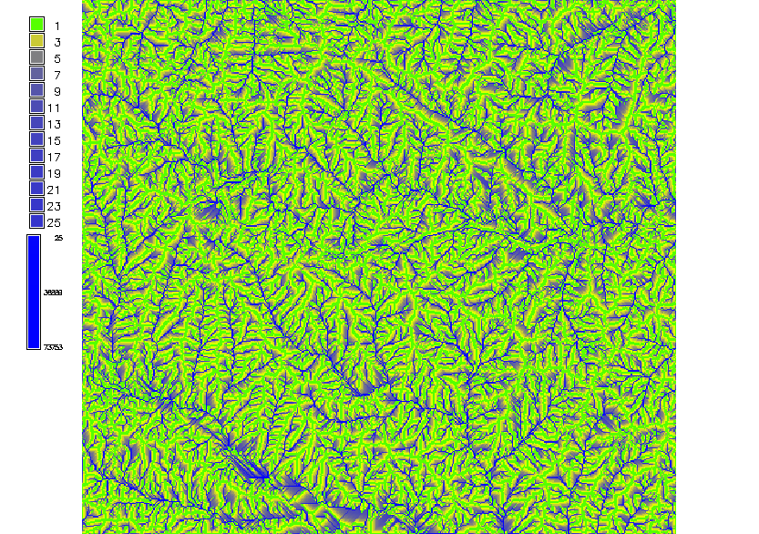
The flow accumulation values range between 1 and 73000
Color for non-linear distributions
- Flow accumulation data range over several magnitudes
- Logarithmic color ramp
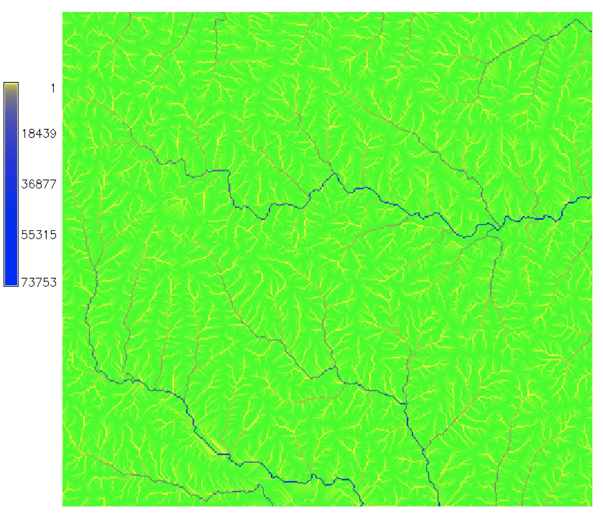
The flow accumulation values range between 1 and 73000
Maps with relief shading
- Color composite highlights relationship between
- the theme values represented by hue and
- surface structure represented by intensity (lightness)
- derived as shaded relief (illuminated topography in greyscale)
- hue: theme values (e.g., elevation, flow, land cover)
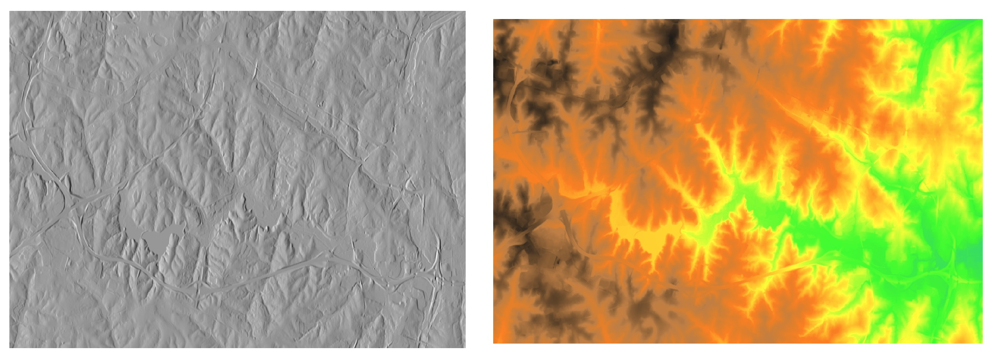
Add equations for illuminated relief and img composite
Relief shading
Resulting color composite for elevation theme

Relief shading
Color composite for flow accumulation with elevation

Cost surface shading
Color composite for proximity to roads surface
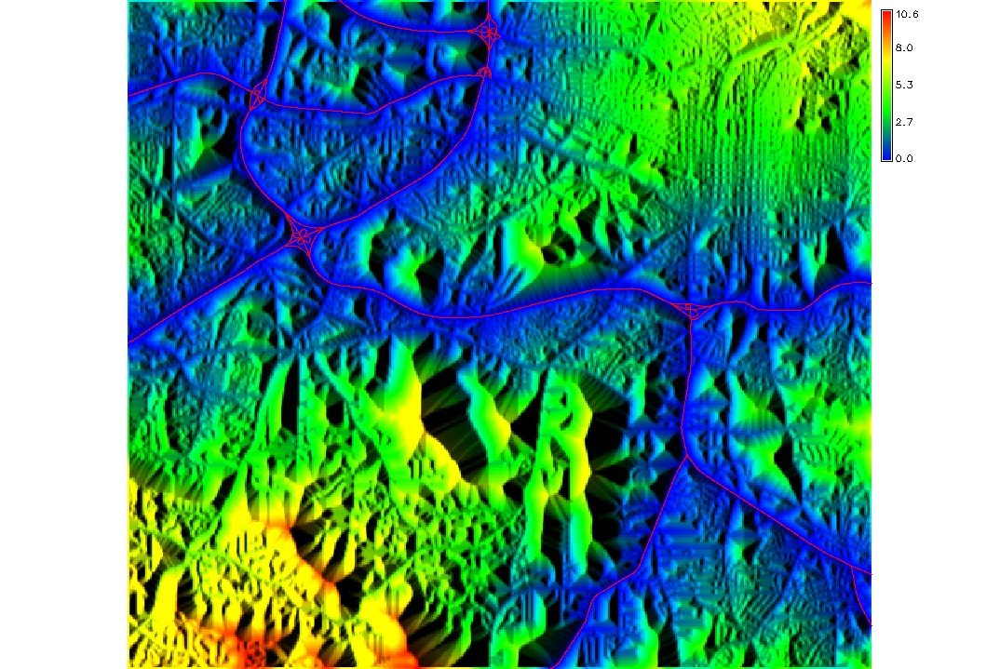
Surface can be abstract, such as cost surface, in this case proximity
to the main highways based on street networks
Vector data display
Topic covered by thematic cartography,
often follow established conventions or national standards
- lines: color and symbols
- polygons: color and fill, transparency
- points: color and symbols
- colors and symbols are assigned based on attributes
- general rules for quantitative and qualitative data apply
- relation between symbol size, line width and scale
- adding labels: complex algorithms for automated positioning of labels
(simulated annealing)
From image to map
- Display of raster and vector data does not make a map
- Map: cartographic representation of geospatial data
- Map elements position the image on earth and explain the content
Coordinate system grid
- Compare the geodetic(geographic) and projected grid
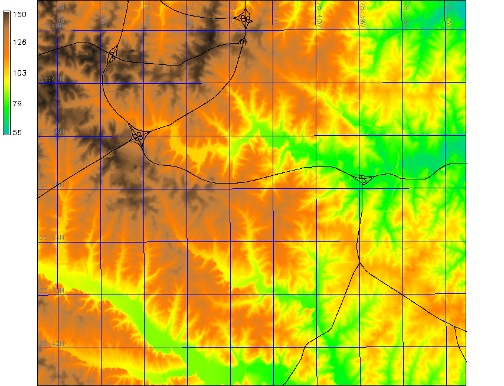
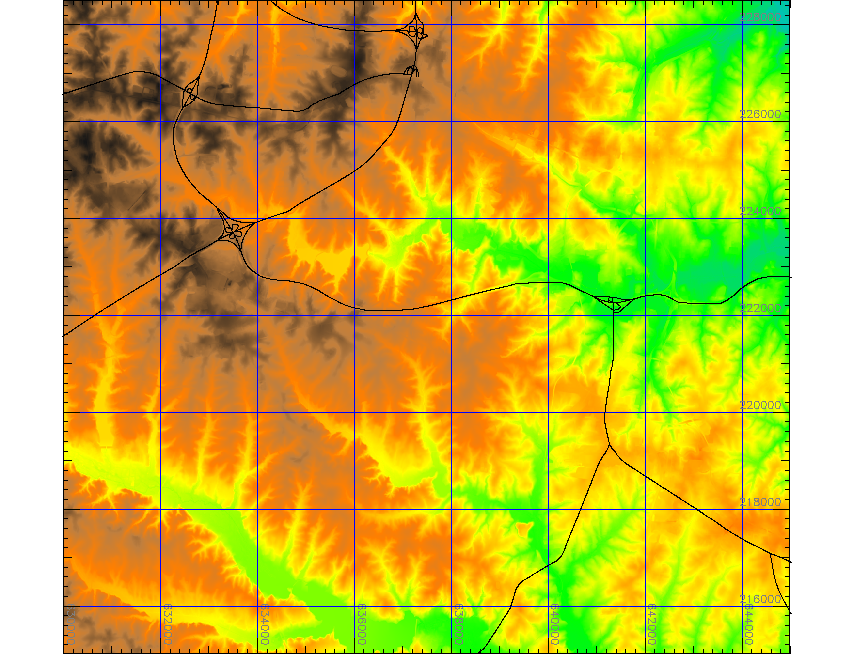
Map elements
- data frame - map content image
- elements outside the map image
- legend and title
- scale and north arrow
- coordinates, citation, metadata
Image from report by Pare, GIS582
Visualization in 3D perspective
Viewing and analyzing 3D data
- Projection of 3D object into a 2D space: perspective
- Parameters:
- viewing position (height, distance and angle)
- surface position, z-scale, resolution
- light and shading
- surface color: raster map, vector data
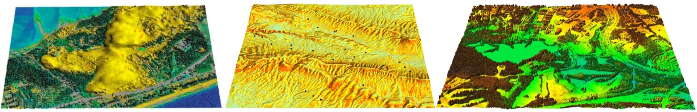
Properties of 3D perspective
Different properties than 2D display
- paralel lines intersect in vanishing point(s)
- scale depends on distance from the viewer
- 3D ortho view: viewing position is in infinity above the image center
- only visible part of surface is rendered
- interactive exploration is important for viewing obstructed data
Light and shading
Important for visual representation of surface structure
Useful for identification of subtle features or artifacts
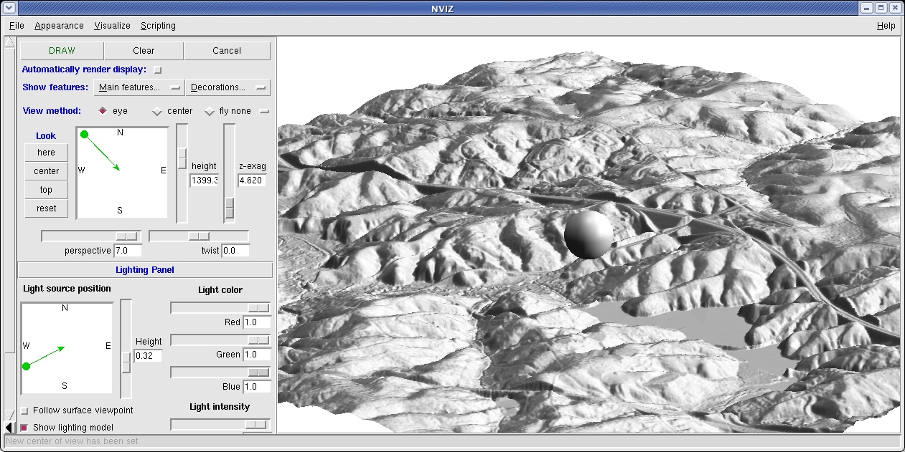
Multiple surface visualization
Applications - use cases
- Lidar: bare ground and surface with vegetation
- Change in topography (coast, development)
- Geological or soil layers
- Vertical scaling is important: vertical distances often 1-3 magnitudes smaller than horizontal
- Display: side-by-side or stacked
- Interactive cutting planes for exploration of stacked surfaces
Multiple surface visualization
Side by side: Bare Earth and Vegetated Surfaces derived from lidar data

Multiple surface visualization
Stacked with crossections: Groundwater, Bare Earth and Vegetated Surfaces

Multiple surface visualization
Difference over time: migrating dune
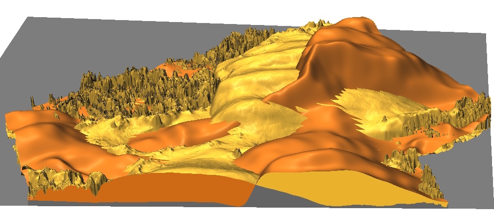
Dynamic Visualization
Dynamic Landscapes
Talk on "Exploring changing landscapes with dynamic visualizations and tangible interaction"